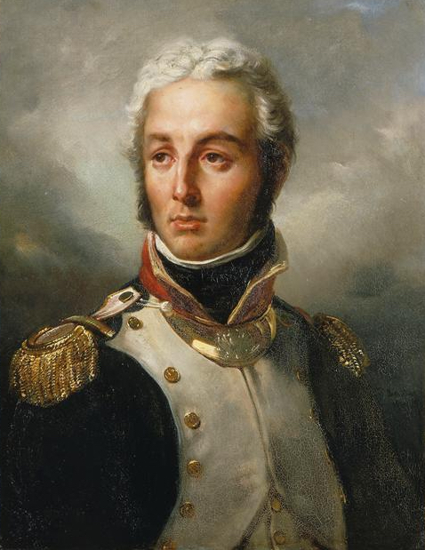
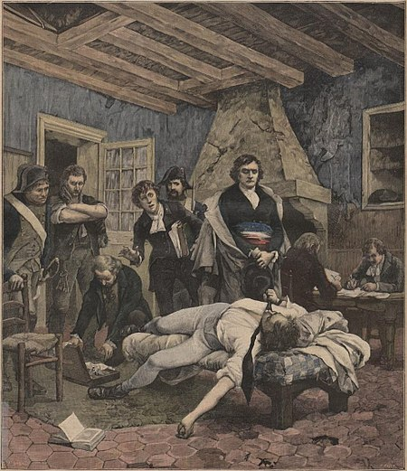
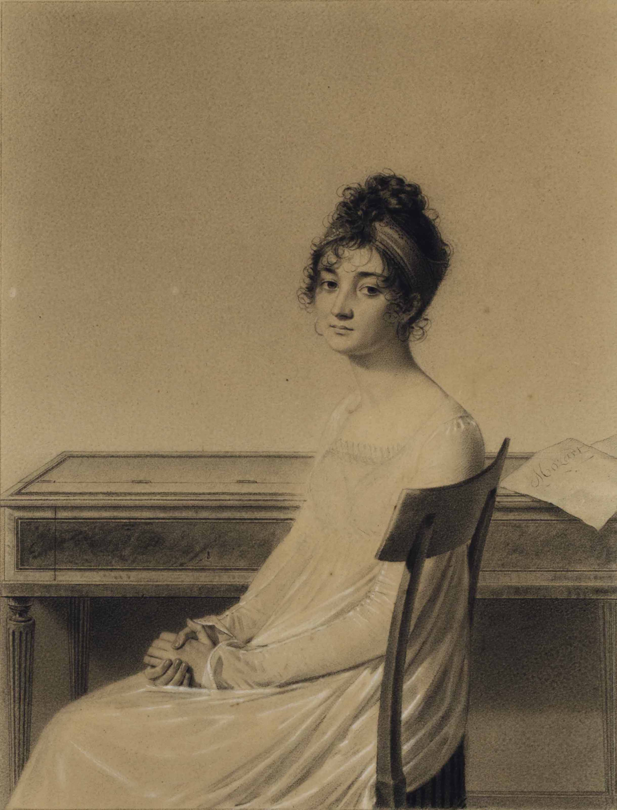
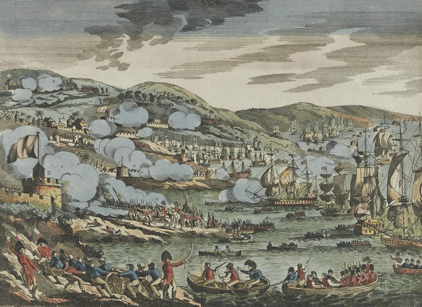
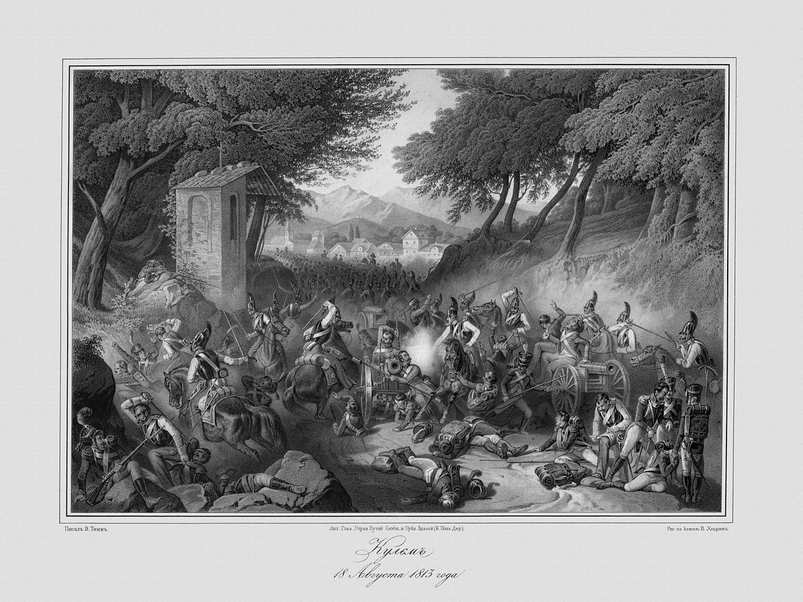

드레스덴을 향하여 (3) - 프라하의 좌청룡 우백호
게시: 2023-12-25T06:30:27+09:00
조미니와 한 자리에 함께 나타난 것은 아니었지만 같은 날 프라하에 있던 알렉산드르의 사령부에 나타난 거물은 바로 모로(Jean Victor Marie Moreau)였습니다. 모로는 제2차 대불동맹전쟁을 호헨린덴(Hohenlinden) 전투로 한 방에 끝내버린 프랑스의 전쟁 영웅이자 열혈 공화주의자로서, 동시에 나폴레옹이 황위에 오르기 전 그의 가장 강력한 정치적 라이벌이었습니다. (전에 읽어보시지 않으셨다면 모로와 호헨린덴 전투에 대해서는 https://nasica-old.tistory.com/6862505 를 참조하세요.)

(모로입니다. 언제 그림인지는 불분명하지만 프랑스 군복을 입고 있습니다. 머리가 마치 실버 블론드처럼 하얗게 그려졌습니다만, 이는 당시 이미 약간 구시대적 스타일로 취급되던 분을 칠한 머리를 한 것으로 보입니다. 다른 그림에서는 그의 머리가 진한 갈색 내지는 검은 색으로 그려졌습니다.) 모로는 1804년 초 벌어진 피슈그뤼(Jean-Charles Pichegru)와 카두달(Georges Cadoudal)의 왕당파 반란 사건의 배후자라는 누명을 뒤집어 쓰고 1804년에 미국으로 망명을 떠난 바 있었습니다. 원래 나폴레옹은 그의 처형을 원했지만, 파리에서 '클럽 모로'라고 불리던 정치 사교계를 운영할 정도로 정치적 거물이자 무엇보다 많은 자코뱅(Jacobin)파 장교들과 병사들의 지지를 받고 있던 모로는 나폴레옹조차 함부로 해칠 수 없었던 거물이었기 때문에 망명으로 처리를 끝낸 것이었습니다.

(원래 농부의 아들이던 피슈그뤼는 공부를 잘 하여 수도사들에게 교육을 받고 젊은 나이에 브리엔(Brienne-le-Château) 사관학교에서 교편을 잡았는데, 그때 그가 가르친 꼬마 학생들 중에는 나폴레옹 본인도 있었습니다. 그는 나중에 혁명군에 가담하여 장군까지 올랐으나, 혁명의 혼란에 환멸을 느끼고 왕당파 복위를 꾀했다가 1797년 프랑스령 기아나로 압송되었습니다. 하지만 그는 결국 탈출하여 미국과 영국을 거친 뒤 1803년 파리로 몰래 돌아와 다시 왕당파 반란을 계획했지만 결국 친구의 배신으로 1804년 2월에 체포되었습니다. 그는 반(反)나폴레옹 인물로 간주된 모로에게도 접근했다고 하는데, 모로는 공화주의자인지라 부르봉 왕가의 복위에는 당연히 찬성하지 않았습니다. 아무튼 그는 재판을 앞둔 4월 6일 감방 안에서 목이 졸려 죽은 상태로 발견되었는데, 공식적으로는 자살로 처리되었지만 나폴레옹이 몰래 죽인 것이라는 말이 많았습니다. 위 그림은 자살 당한 그의 시신을 발견하는 장면입니다. 감방치고는 방이 꽤 좋네요.) 이렇게 미국으로 떠난 모로는 한동안 유럽에서 잊혀진 인물이 되었습니다. 선진국이자 유럽의 패권국인 프랑스의 도움으로 독립한 신생국가 미국에서는 프랑스에서 온 정치적 망명객들을 상당히 우러러 보며 이런저런 관직을 제공하는 것이 일반적이었고, 모로도 그런 제안을 받았습니다. 하지만 열혈 공화주의자일 뿐 원래 정치적 야망이 크지는 않았던 모로는 그런 제안을 거부하고 (당시는 꽤 작았던) 미국 방방곡곡을 여행하다 뉴저지 델라웨어 강변에 정착하여 사냥과 낚시, 사교 모임을 즐기며 정말로 편안하고 조용한 인생을 즐기고 있었습니다. 하지만 시대는 모로를 가만 두지 않았습니다. 원래부터 그의 집에는 유럽에서 온 망명객이나 반(反)나폴레옹 움직임의 실마리를 찾던 유럽 각국 정부로부터의 사절단 등이 끊임 없이 들락거리고 있었습니다. 그도 그럴 것이 나폴레옹 밑에서 한자리씩 하고 있는 원수들 중 일부가 원래 모로의 부하일 정도였으니, 그가 프랑스군에 대해 끼칠 수 있는 영향력이 적지 않았기 때문이었습니다. 그렇지만 유유자적한 미국 시골 생활을 즐기던 모로를 기여코 유럽의 피비린내 나는 전장으로 이끈 것은 다름아닌 그의 와이프인 모로 부인, 즉 외제니 윌로(Eugénie Hulot)였습니다.

(외제니 윌로입니다. 그녀도 조세핀처럼 단명했는데, 조세핀보다 훨씬 더 젊은 나이인 40세에 사망했습니다. 당시엔 그렇게 젊은 나이에 병으로 죽는 일이 많았습니다.)
그녀가 고작 19살이던 1800년 37세의 아저씨 모로와 결혼한 외제니는 인도양의 프랑스 식민지인 모리셔스(Mauritius, 당시 이름은 일-드-프랑스(Isle de France, 프랑스의 섬이라는 뜻))에서 태어난 아가씨였습니다. 이런 인연 덕분이었는지, 외제니는 카리브해의 마르티니크 섬 태생이었던 조세핀과도 친한 사이였습니다. 일부 역사가는 외제니에 대해 멍청하지만 허영심은 넘쳐나는 여자라고 혹평을 했는데, 화려한 파리에서 '클럽 모로'의 안주인 역할을 하던 그녀가 한적한 미국 뉴저지 시골집에 만족하지 않았을 것 같기는 합니다. 그녀가 남긴 편지를 보면 그녀는 필라델피아보다는 더 유쾌하고 떠들석한 뉴욕을 더 좋아했으며, 자신의 집에 프랑스 망명 귀족들과 영국 귀족들이 자주 드나드는 것에 대해 은근히 자랑스러워 했다고 합니다.
(인도양의 섬으로 분류되지만, 실은 마다가스카르 섬의 동쪽에 있는 섬으로서 아프리카에 더 가까운 모리셔스 섬입니다. 무척 아름답습니다만 18세기에 시작된 프랑스의 식민지 역사는 결코 아름답지 않았고, 프랑스는 이 곳을 무역기지로 삼았지만 그 주요 거래 상품 중에는 노예의 비중이 컸습니다.)

(해군 국가인 영국으로부터 프랑스가 모리셔스, 즉 일-드-프랑스(Isle de France) 같은 먼 바다의 섬을 지키는 것은 쉽지 않은 일이었습니다. 원래 이 섬에는 프랑스군 병력이 1천3백, 대부분 현지 흑인들로 구성되긴 했지만 민병대도 1만 가량이 있었지만, 1810년 11월 말 전열함 1척에 프리깃함 12척의 함대를 동원하여 육군 병력 5천2백을 거느리고 침공한 영국군을 당해낼 수는 없었습니다. 그 침공작전을 그린 그림입니다. 이 침공 작전에서 양측 사상자는 수십 명에 불과했습니다.) 전해지는 바에 따르면 모로는 조국 프랑스를 침공하는 외국군에 가담하는 것은 떳떳하지 못한 일이라고 판단하여 1813년 연합군에 가담하라고 날아드는 초청을 거절하고 있었지만, 다시 파리로 돌아가 권력과 화제의 중심이 되고자 했던 외제니가 '당신은 나폴레옹과 싸우러 가는 것이지 프랑스와 싸우러 가는 것이 아니다'라는 논리로 남편을 설득했다고 합니다. 어떻게 생각하면 위험한 전쟁터로 남편을 내보내는데 와이프가 적극적이라는 것이 좀 이해가 안 갈 수 있는데, 실은 그녀가 무슨 일인지 1812년 프랑스로 혼자 귀국하여 체류 허가를 요청했다가 나폴레옹 당국에 의해 체포되어 추방된 적이 있었다는 것을 고려하면 나폴레옹에 대한 개인적인 감정도 꽤 실려있었던 것 같습니다. 아무튼 기대하지도 않았던 모로와 조미니의 두 인재가 이렇게 같은 날 자신 앞에 나타나 협력을 약속한 것에 대해, 짜르 알렉산드르의 기쁨은 이루 말할 수 없을 정도로 컸습니다. 상당히 종교적이었던 그는 이것이 나폴레옹의 패망을 원하시는 하나님의 인도라고 믿었나 봅니다. 이렇게 좌청룡 우백호의 두 인재를 얻고나자 자신감이 새롭게 솟았는지 그만 예전의 고질병이 도져버린 것입니다. 그는 이미 통 크게 3개 방면군의 지휘관을 모두 비러시아군으로 임명해놓고도, 뒤늦게 3개 방면군 총사령관직이라는 것을 생각해내고는, 이 두 참모가 새로 가담한 것은 하나님의 뜻이라며 메테르니히에게 그 자리를 자기가 맡게 해달라고 협상을 걸었습니다. 당연히 메테르니히는 매우 난감했습니다. 그는 완곡히 그러나 강력하게 반대하여 간신히 이 젊은 짜르의 허영심을 억누를 수 있었습니다. 약간 스포일러지만 며칠 뒤 (다들 아시다시피) 모로가 드레스덴 전투에서 대포알에 맞아 쓰러지자, 짜르는 메테르니히에게 '당신이 옳았소. 하나님의 뜻이 아니었나 보오.'라고 말했다고 전해집니다.
하지만 이 두 인재를 거느리는 것은 짜르에게도 이 둘에게도 그다지 유쾌한 일은 아니었습니다. 일단 조미니는 원래부터 러시아 육군 중장의 계급을 받아가지고 있었으므로 그는 그 자격으로 짜르의 개인 참모진에 들어갔습니다. 그러나 모로는 엄격히 말해 외국인 민간인이었고, 이미 3개 방면군 사령관직은 각국의 이해 관계에 따라 연합국들이 나눠가진 상태였습니다. 내심 총사령관직을 기대하고 갔던 모로에게 줄 적당한 지휘관 자리는 없었습니다. 결국 그는 짜르의 개인적인 고문 형태로 어정쩡하게 알렉산드르의 사령부를 따라 다니게 되었습니다. 물론 겸손했던 알렉산드르는 그에게 최대한의 예우를 다 했습니다. 그러나 알렉산드르도 조미니가 데리고 있기 편한 부하가 아니라는 것을 곧 알게 되었습니다. 당시 보헤미아 방면군의 사령부가 있던 프라하의 거리는 연합국들에서 모인 왕족과 장군, 화려한 차림의 젊은 귀족 청년들과 고위 관료들로 인해 마치 뭔가 국제 외교 행사장 같았다고 합니다. 특히 보헤미아 방면군 사령관인 슈바르첸베르크의 사령부는 군사 지휘소라기보다는 무도회가 열리는 살롱 같은 분위기였습니다. 당연히 바쁘게 돌아가는 전황 분석과 보고서 작성 대신 격식과 체면, 그리고 군주들의 호의를 얻기 위한 음모와 아부가 판을 쳤습니다. 여태까지 검소하고 질박한 나폴레옹의 사령부 분위기에 익숙했던 조미니의 눈에는 이 모든 것이 어이없게 느껴졌습니다. 쟁쟁한 인물들이 가득한 나폴레옹의 사령부에서도 가뜩이나 저 혼자 잘난 줄 알았던 그는 이 곳에서 자기 이외에는 제대로 된 두뇌가 없다고 생각하게 되었고 당연히 목소리도 커졌습니다. 그가 짜르의 참모부에서 맡은 임무는 안방 주인인 오스트리아인들에게 러시아의 뜻을 관철시키는 연락 장교 같은 역할이었는데, 오만하기 짝이 없는 그의 태도가 이런 임무에 잘 어울릴 리가 없었습니다. 그는 곧 다양한 연합군 인사들과 두루두루 갈등을 빚었습니다. 곧 벌어질 드레스덴 전투를 계획하던 8월 25~26일 보헤미아 방면군 사령부에서 그는 방자한 태도로 자신의 주장을 고집했고, 보다 못한 영국 대사 캐쓰카트(William S. Cathcart) 장군이 그를 따로 불러내어 이렇게 타일렀다고 합니다. "당신의 관점과 태도를 좀 조절하시는 것이 좋겠소. 그러지 않았다간 새로 얻은 이 동료들이 곧 당신의 적이 될 것 같소." 하지만 이렇게 영국 귀족이 한마디 했다고 고쳐질 성깔이라면 진작에 고쳐졌겠지요. 조미니는 이렇게 대꾸했다고 합니다. "미안합니다. 하지만 유럽의 운명과 세 위대한 군주의 명예, 그리고 나님의 평판이 걸려 있는 작전을 논하는데 있어 난 내 생각대로 말할 겁니다." 이런 성격은 조미니의 새 직장 생활에 전혀 도움이 되지 않았습니다. 나중인 8월 30일 쿨름(Kulm) 전투에서 그는 총사령관 슈바르첸베르크의 지휘를 비난하면서 다른 작전 계획을 주장했는데, 결국 슈바르첸베르크는 그의 조언을 따르지 않았습니다. 그럼에도 불구하고 조미니는 여기저기에 호소하여 자신의 뜻을 주장했고 그 결과 연합군은 방담(Dominique Vandamme) 휘하의 프랑스 제1군단 전체를 궤멸시키는 승리를 거둡니다. 그러나 이때 조미니에게 주어진 것은 러시아의 2등급 훈장인 성-안나 훈장이었습니다. 이 훈장이 자신의 공적에 비해 너무 볼품없다고 생각한 조미니는 러시아군에서도 사임할 생각을 했는데, 그의 와이프인 아들레이드(Adelaide Charlotte Roze Jomini)가 말리는 바람에 그냥 계속 러시아군에 남았다고 합니다.

(1813년 8월 29~30일의 쿨름 전투입니다. 드레스덴 전투에서 쾌승을 거둔 나폴레옹의 기세가 확 꺾인 것이 바로 이 쿨름 전투였습니다.) 결국 짜르가 새로 얻은 두 참모, 즉 조미니와 모로의 공통점은 모두 와이프 말은 잘 들었다는 점인데, 애석하게도 이 둘은 그 점 말고는 공통점이 별로 많지 않았고, 이 둘의 관계도 좋지는 않았습니다. 모로도 자기 잘난 맛에 사는 사람이었지만 자신만만한 천재형 인물인 조미니에 비해 리더쉽이 있는 보스형 인물이었던 모로는 훨씬 태도가 좋았습니다. 그러나 와이프 말에 설득 당해 왔을 뿐 여전히 프랑스군을 향해 칼을 겨눠야 하는 것이 썩 내키지 않았던 모로는 시종일관 다소 의기소침한 모습이었습니다. 더군다나 직위도 없이 아무 것도 아닌 일반인 자격으로 군주들과 귀족들 틈에 있다보니 공화주의자였던 그는 더욱 심기가 불편했을 것입니다. 그나마 조미니가 망명하여 자신과 같은 날 프라하에 왔다는 소식이 그의 마음을 위로했습니다. 자신과 같은 처지의 인물을 만났다고 생각한 것입니다. 모로는 조미니를 만나게 되자 무척 반갑게 손을 잡으며 인사했습니다. 그러나 싸가지 조미니는 그의 성격답게 차갑게 손을 빼냈고, 머쓱해진 모로는 "이렇게 서로 비슷한 처지에서 만나게 되니 참 어색하네요" 라고 말했습니다. 그러자 조미니는 더욱 싸가지 없게 이렇게 말했다고 합니다. "비슷한 처지가 아닙니다. 저는 원래 프랑스인이 아니쟎습니까?" 이런 말썽장이 조미니는 그래도 모로보다는 훨씬 쓸모가 있었습니다. 당장 바로 며칠 전까지 그랑다르메 수뇌부에 있었으니 나폴레옹의 속사정에 대해 훤히 알고 있다는 것 자체가 엄청난 가치를 가지는 일이었습니다. 그런데 잠깐, A기업에서 일하던 영업사원이 마침 어떤 대규모 프로젝트에 있어서 A기업과 경쟁 입찰 관계에 있던 B기업으로 이직한 뒤에, A기업의 입찰 가격에 대해 B기업에게 털어놓는 것은 엄연한 불법입니다. 불법을 떠나 일단 최소한의 상도덕이 없는 행위지요. 그런데 1813년 당시는 아직 신사도가 살아있던 낭만의 시대였습니다. 과연 연합군은 조미니에게 그랑다르메의 군사기밀에 대해 취조를 했을까요? 조미니는 그에 대해 술술 털어 놓았을까요? Source : The Life of Napoleon Bonaparte, by William Milligan Sloane Napoleon and the Struggle for Germany, by Leggiere, Michael V https://www.amazon.com/Op%C3%A9rations-Militaires-Contenant-Lhistoire-Campagnes/dp/1147116601 https://diginole.lib.fsu.edu/islandora/object/fsu:182659/datastream/PDF/view https://www.geni.com/people/Adelaide-Charlotta-Bsse-Jomini/6000000029664790952 https://www.frenchempire.net/biographies/moreau/ https://en.wikipedia.org/wiki/Battle_of_Hohenlinden https://en.wikipedia.org/wiki/Jean-Charles_Pichegru https://www.thierrydemaigret.com/lot/87401/8153823-eugenie-hulot-dosery-mme-jeanv https://en.wikipedia.org/wiki/Invasion_of_Isle_de_France